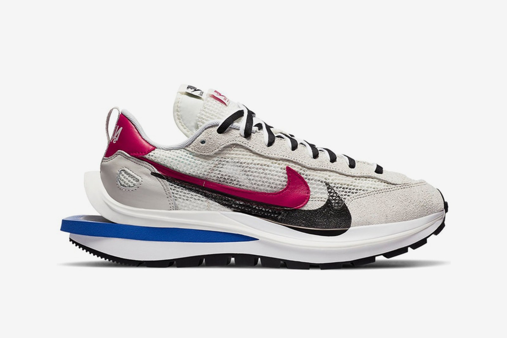

WHERE TO BUY THE NEW NIKE X SACAI VAPORWAFFLE NOW
25 days ago in selects
words by Alek Rose
© STOCKX
Nike’s Pegasus is one of the brand’s longest-standing designs. First released in 1983, the Pegasus is ultimately one of the most versatile retro runners out there, and what better proof of the classic silhouette’s wild versatility than the sacai VaporWaffle, which transposes the Pegasus’ vintage upper into a futuristic, layered design. The Nike x sacai VaporWaffle dropped earlier today, but you can secure the bag now below.
The Nike x sacai VaporWaffle continues the avant-garde style of sacai and Nike’s collaborative Waffle Racer. In keeping with the style, sacai designer Chitose Abe seemingly fuses two designs into one, quasi-illusory final product which features a mishmash sole unit and multiple tongues as evidence of the fusion. The Nike VaporWaffle drops in two pared-back but opposing colorways. For those who prefer to keep footwear toned down, there’s a simple black and white iteration, but for those looking for a touch of punchy vintage style, the alternative pair boasts a bright Fuchsia swoosh and Game Royal sole insert which pop against a smooth Bone backdrop.
Just as the unorthodox Waffle Racer dominated the world of sneaker collaborations for months before and after its release, the VaporWaffle promises to do the same. Abe’s take on the lightweight, retro Nike Pegasus is impossible to ignore with an intricate upper and mind-boggling, unique sole unit. While the style divides opinions, it’s hard to not appreciate the boundless creativity and for that alone, the Nike x sacai VaporWaffle is already a classic.
StockX market data shows a whopping 52-week high point of $1,390 for the Bone colorway and $1,065 for the Black, while the Black currently averages out at $535 and Fuchsia at $503. Get your sacai x Nike fix at StockX now.